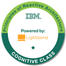
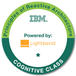

Sean Davey
Originally I am from Leeds, a northern city in the UK. However, since I was able, I have tried to
broaden my experiences by travelling as much of the world as possible.
I believe this wanderlust has made me who I am today.
I am accepting of all other cultures and genuinely enjoy getting to know people and discover
new ways of doing things.
I have achieved a great amount in my career so far, working in various industries around the world. I am
professional, reliable and highly motivated. I worked over ten years in the hospitality / catering
industry before moving into the IT industry, where my progress has been rapid. As you may see on this
site I have shown a history of progression within each company I work with.
I am friendly, a great team member and always willing to help. I organise my workload efficiently and
always try to accept extra responsibility. I study IT related subjects in my personal time and dedicate
a lot of my focus to self-improvement.
As my experience has grown, I have moved into a leadership role in each workplace very quickly. I have
proven myself to be a consistent hard worker who doesn't lower my standards. I believe I inspire others
to do the same with this ethic.
I have lived in Czech Republic for 7 years, after returning from living and travelling around New
Zealand / Asia for almost 2 years. I can understand Czech language to a reasonable level, and would like
to be fluent one day. I have recently obtained my Czech permanent residency, bought a house and started
a family in Czech Republic.


 
